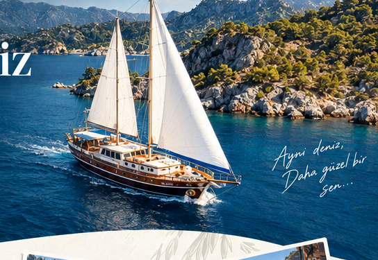
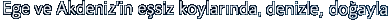
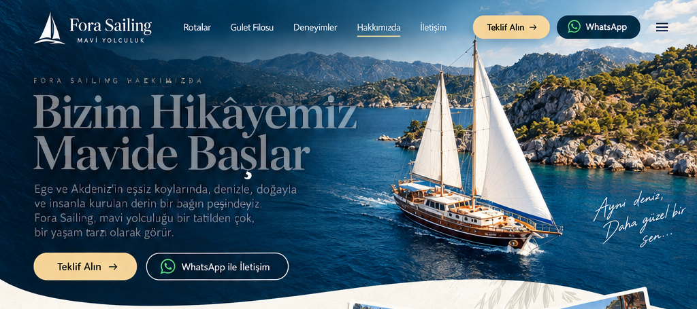
Bizim Hikâyemiz Mavide Başlar
Ege ve Akdeniz’in eşsiz koylarında, denizle, doğayla ve insanla kurulan derin bir bağın peşindeyiz.
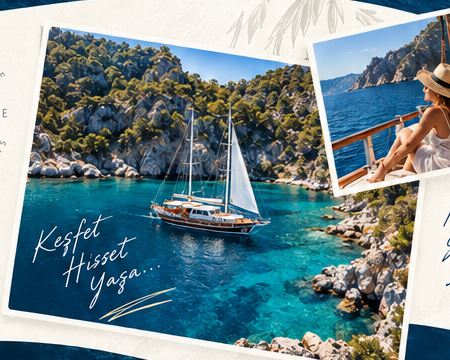
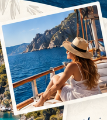
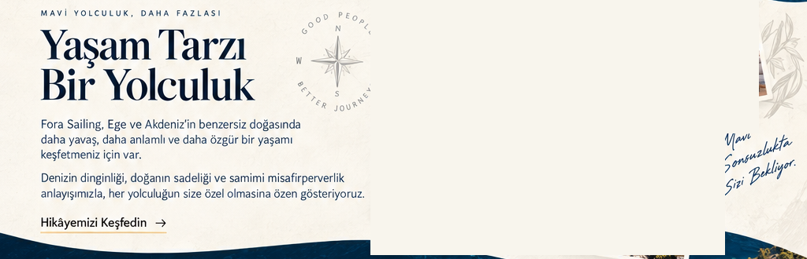
Yaşam Tarzı Bir Yolculuk
Fora Sailing, Ege ve Akdeniz’in benzersiz doğasında daha yavaş, daha anlamlı ve özgür bir yaşamı keşfetmeniz için var.
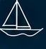
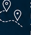
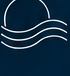
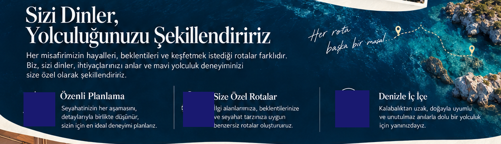
Sizi Dinler, Yolculuğunuzu Şekillendiririz
- Özenli Planlama
- Size Özel Rotalar
- Denizle İç İçe
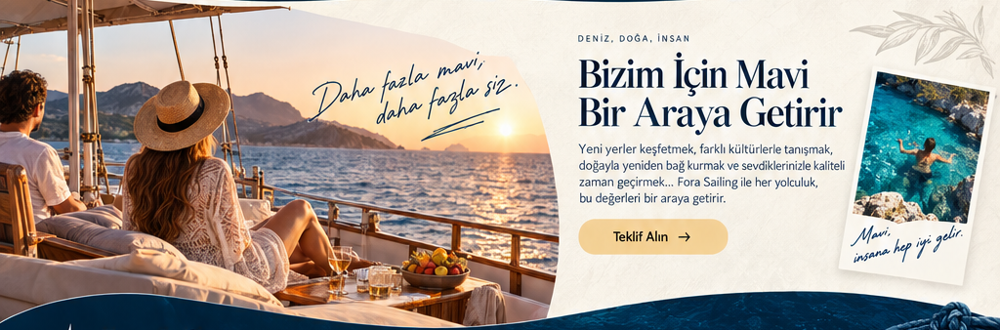
Bizim İçin Mavi Bir Araya Getirir
Yeni yerler keşfetmek, farklı kültürlerle tanışmak, doğayla yeniden bağ kurmak ve sevdiklerinizle kaliteli zaman geçirmek…